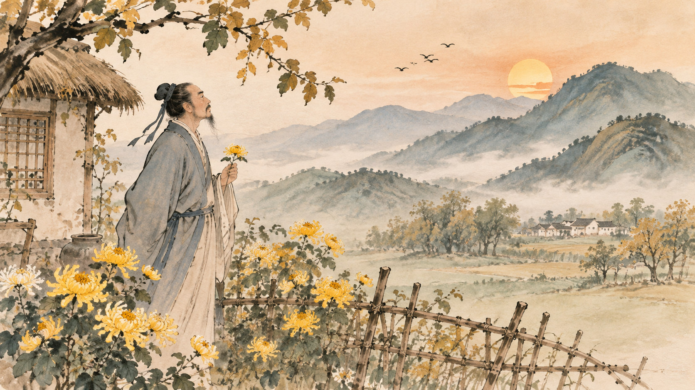
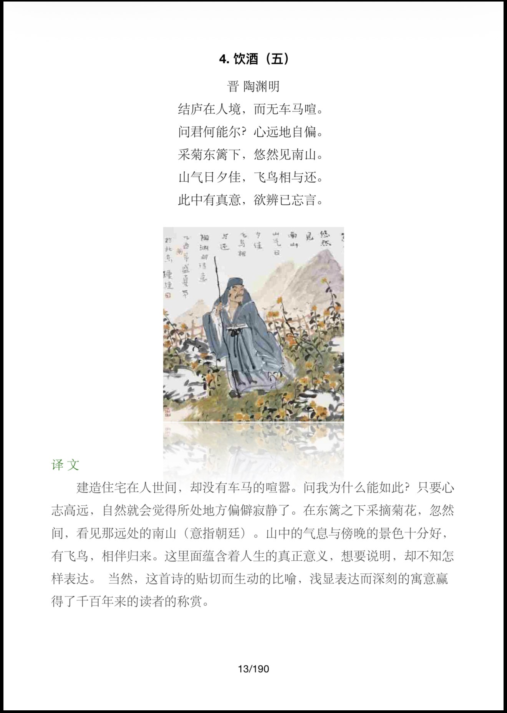
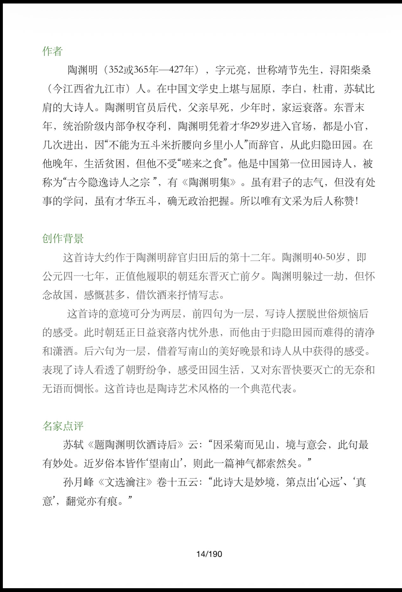

第四首 · POEM 04 · 东晋末至南朝宋初
饮酒（其五）
陶渊明

一、诗词朗诵 · 听原诗
点击播放，聆听《饮酒（其五）》原诗朗诵。
结庐在人境，而无车马喧。
问君何能尔？心远地自偏。
采菊东篱下，悠然见南山。
山气日夕佳，飞鸟相与还。
此中有真意，欲辨已忘言。
二、译文
建造住宅在人世间，却没有车马的喧嚣。问我为什么能如此？只要心志高远，自然就会觉得所处地方偏僻寂静了。在东篱之下采摘菊花，忽然间，看见那远处的南山（意指朝廷）。山中的气息与傍晚的景色十分好，有飞鸟，相伴归来。这里面蕴含着人生的真正意义，想要说明，却不知怎样表达。当然，这首诗的贴切而生动的比喻、浅显表达而深刻的寓意赢得了千百年来的读者的称赏。
三、作者
陶渊明（约365—427年），字元亮，世称靖节先生，浔阳柴桑人，东晋末至南朝宋初诗人。曾经出仕，后归隐田园；其诗以真率自然和田园生活见长，被视为中国田园诗的重要代表。出生年份等细节在文献中存在不同记载。
四、创作背景与赏析
这首诗是《饮酒》组诗中的第五首，具体写作年份存在不同说法。诗人在世俗人间而获得内心安宁；采菊、南山、暮色与归鸟构成平和悠远的意境。“心远地自偏”点明：宁静不只取决于环境，更源于心境。
诗的前四句写摆脱尘俗烦扰的感受，后六句借南山的景色表达田园生活与内心感悟。“采菊东篱下，悠然见南山”尤其被后世广为传诵。
五、名家点评
苏轼曾称赏“采菊而见山”的无意之妙；后世诗论也常将此诗的“心远”“真意”看作其意境的关键。
六、翻译与讲解录音 · 听解读
点击播放，聆听本首诗的翻译与讲解。
七、书中原页 · 翻译及讲解全文
保留你提供的第13页和第14页原样图片，便于逐字核对书中原文、作者介绍、创作背景和评论。

